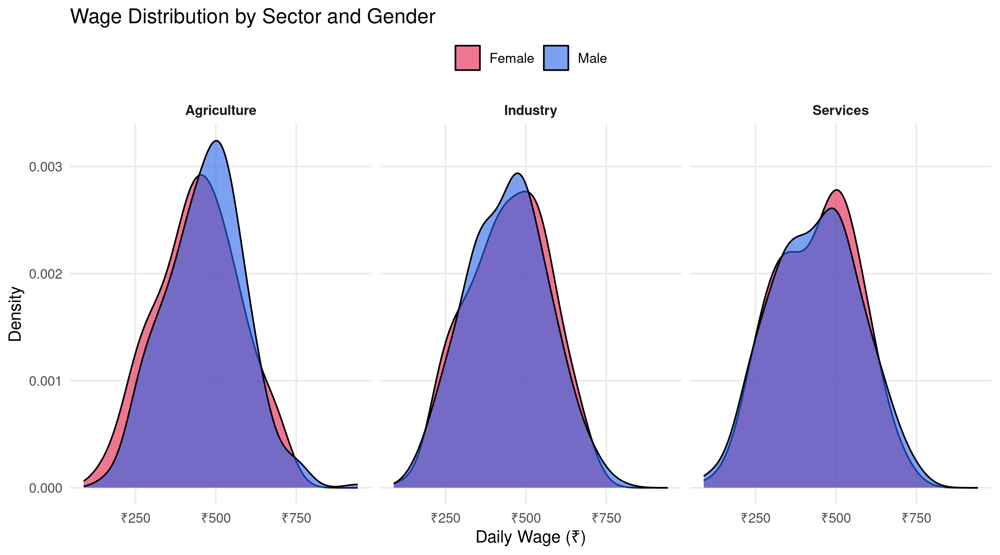

library(tidyverse)
library(scales)
# Create a realistic wage dataset
set.seed(2025)
wage_data <- data.frame(
state = rep(c("Haryana","Punjab","UP","Bihar","Maharashtra",
"Gujarat","Karnataka","Tamil Nadu"), each = 200),
wage = c(
rnorm(200, 450, 80), rnorm(200, 480, 90), rnorm(200, 320, 70),
rnorm(200, 280, 65), rnorm(200, 520, 110), rnorm(200, 490, 95),
rnorm(200, 510, 100), rnorm(200, 535, 105)
),
gender = sample(c("Male","Female"), 1600, replace = TRUE, prob=c(.6,.4)),
sector = sample(c("Agriculture","Industry","Services"), 1600, replace=TRUE)
)Beautiful Statistical Graphics with ggplot2
R
ggplot2
Visualization
A step-by-step guide to creating publication-quality charts using ggplot2, including themes, annotations, and color scales.
Why ggplot2?
When I first switched from Excel to R for data visualization, ggplot2 felt confusing. “Why do I need aes()? What’s a geom?” After years of use, I now think it’s the most elegant visualization system ever designed.
The key insight is the Grammar of Graphics: every chart is built from composable layers.
The Foundation: Data + Aesthetics + Geometry
Layer 1: The Basic Plot
# Start simple
ggplot(wage_data, aes(x = wage)) +
geom_histogram(bins = 40, fill = "#2563eb", alpha = 0.8) +
labs(title = "Wage Distribution", x = "Daily Wage (₹)", y = "Count")
Layer 2: Add Facets and Color
ggplot(wage_data, aes(x = wage, fill = gender)) +
geom_density(alpha = 0.6, adjust = 1.2) +
facet_wrap(~sector, ncol = 3) +
scale_fill_manual(values = c("Male"="#2563eb","Female"="#e11d48")) +
scale_x_continuous(labels = label_number(prefix="₹")) +
labs(title = "Wage Distribution by Sector and Gender",
x = "Daily Wage (₹)", y = "Density", fill = NULL) +
theme_minimal(base_size = 11) +
theme(legend.position = "top",
strip.text = element_text(face="bold"),
panel.grid.minor = element_blank())
Layer 3: Publication-Quality Box Plot
state_summary <- wage_data |>
group_by(state) |>
summarise(median_wage = median(wage), .groups = "drop") |>
arrange(median_wage)
wage_data |>
mutate(state = factor(state, levels = state_summary$state)) |>
ggplot(aes(x = state, y = wage, fill = gender)) +
geom_boxplot(
outlier.shape = 21, outlier.size = 1, outlier.alpha = 0.4,
width = 0.6, position = position_dodge(0.7), alpha = 0.8
) +
stat_summary(
aes(group = gender),
fun = mean, geom = "point",
shape = 23, size = 3, fill = "white",
position = position_dodge(0.7)
) +
scale_fill_manual(values = c("Male"="#2563eb","Female"="#e11d48"),
name = "Gender") +
scale_y_continuous(
labels = label_number(prefix = "₹"),
breaks = seq(0, 800, 100)
) +
coord_flip() +
labs(
title = "Daily Wage Distribution by State and Gender",
subtitle = "Diamonds show group means · Boxes show IQR · Lines show medians",
x = NULL, y = "Daily Wage (₹)",
caption = "Source: Simulated survey data for demonstration"
) +
theme_minimal(base_size = 12) +
theme(
plot.title = element_text(face = "bold", size = 14),
plot.subtitle = element_text(color = "#64748b", size = 10),
plot.caption = element_text(color = "#94a3b8", size = 9),
panel.grid.major.y = element_blank(),
panel.grid.minor = element_blank(),
legend.position = "top",
plot.background = element_rect(fill = "white", color = NA),
plot.margin = margin(16, 24, 12, 16)
)
Layer 4: Custom Theme Function
The real power comes from creating your own reusable theme:
theme_pawan <- function(base_size = 12) {
theme_minimal(base_size = base_size) +
theme(
text = element_text(family = "sans"),
plot.title = element_text(face = "bold", size = base_size + 3, hjust = 0),
plot.subtitle = element_text(color = "#64748b", hjust = 0, margin = margin(b = 10)),
plot.caption = element_text(color = "#94a3b8", size = base_size - 3, hjust = 1),
panel.grid.minor = element_blank(),
panel.grid.major = element_line(color = "#f1f5f9"),
axis.title = element_text(color = "#475569", size = base_size - 1),
legend.position = "top",
legend.title = element_text(face = "bold"),
plot.background = element_rect(fill = "white", color = NA),
plot.margin = margin(16, 24, 12, 16)
)
}
# Use it
wage_data |>
group_by(state, sector) |>
summarise(mean_wage = mean(wage), .groups = "drop") |>
ggplot(aes(x = reorder(state, mean_wage), y = mean_wage, fill = sector)) +
geom_col(position = "dodge", width = 0.7, alpha = 0.9) +
scale_fill_manual(values = c("#2563eb","#7c3aed","#0d9488")) +
scale_y_continuous(labels = label_number(prefix = "₹")) +
coord_flip() +
labs(title = "Mean Wage by State and Sector",
subtitle = "Custom theme applied consistently across all charts",
x = NULL, y = "Mean Daily Wage (₹)", fill = "Sector") +
theme_pawan()
The theme_pawan() function means every chart in a report looks consistent — a crucial detail for professional work.